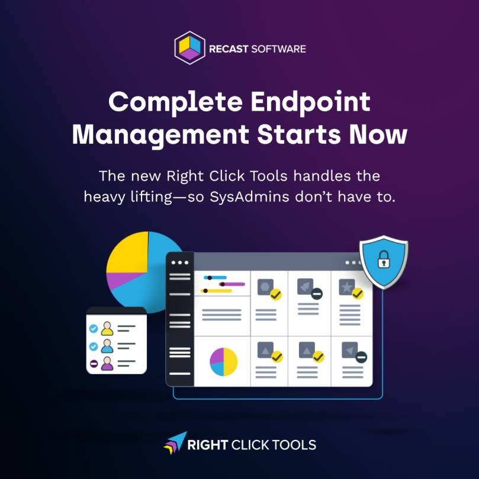

If your day still looks like this—jumping between consoles, chasing patch gaps, and wrestling with standing local admin—your tools are slowing you down. The New Right Click Tools changes that by bringing patching, reporting/visibility, and privileged access together, built for SCCM/ConfigMgr and Intune realities.
Trusted across 60M+ endpoints, Right Click Tools is designed for modern endpoint management at scale—without adding another portal to learn.

What’s New (and Why It Matters)
Right Click Tools Patching
Automate third-party application patching at scale and close gaps faster. Spend less time packaging and more time getting compliant.
Right Click Tools Insights
Turn visibility into action. Go from “non-compliant” to “handled” in fewer clicks with reports you can act on—right where you work.
Right Click Tools Privileged Access
Adopt just-in-time elevation instead of “always-on” admin. Grant time-boxed, scoped privileges that protect users and keep work moving.
From Visibility to Action: A Day-in-the-Life
Scenario: A critical third-party app is out of date on a subset of devices, and a service desk ticket needs elevated access to complete a fix.
- See: Use Right Click Tools Insights to isolate the affected devices and understand blast radius—OS versions, app versions, compliance posture—without leaving your primary console.
- Decide: Identify remediation paths (automated patch vs. targeted deployment) and group devices instantly based on posture and risk.
- Fix: Trigger Right Click Tools Patching to update the app fleet-wide, or perform a scoped rollout to a pilot collection. Track status in the same place you discovered the issue.
- Elevate (when needed): Grant just-in-time elevation with Right Click Tools Privileged Access to let a technician complete a task that truly requires higher privileges. Elevation is time-boxed, audited, and scoped—no lingering admin.
- Move on: With fewer tools to juggle and fewer hops between discovery and remediation, you reduce escalations and shorten mean time to resolution (MTTR).
Where Consolidation Pays Off
- Close patching gaps faster: Third-party updates at scale—without endless packaging cycles.
- Reduce tool sprawl: One toolkit that handles the most frequent endpoint jobs.
- Fewer clicks to results: Insights that connect directly to actions.
- Least privilege by default: Just-in-time elevation instead of standing local admin.
- Cleaner compliance signal: Stronger reporting for leaders and audit-friendly traces for security.
What Changed vs. “Old” Right Click Tools
- Third-party application patching is now built to scale, reducing manual overhead.
- Deeper, actionable reporting converts insight into in-flow remediation.
- Privilege management is built-in, enabling safer just-in-time elevation.
In short: Patch smarter. Report deeper. Elevate safely.
Getting Started (Live Walk-Through + Q&A)
See the New Right Click Tools in action and bring your questions. For more Intune-focused background, check out Introducing Right Click Tools for Intune Community Edition.
🗓 August 27, 2025 — 10:00 AM CT (17:00 CEST)
Save your seat → https://www.recastsoftware.com/resources/the-new-right-click-tools/